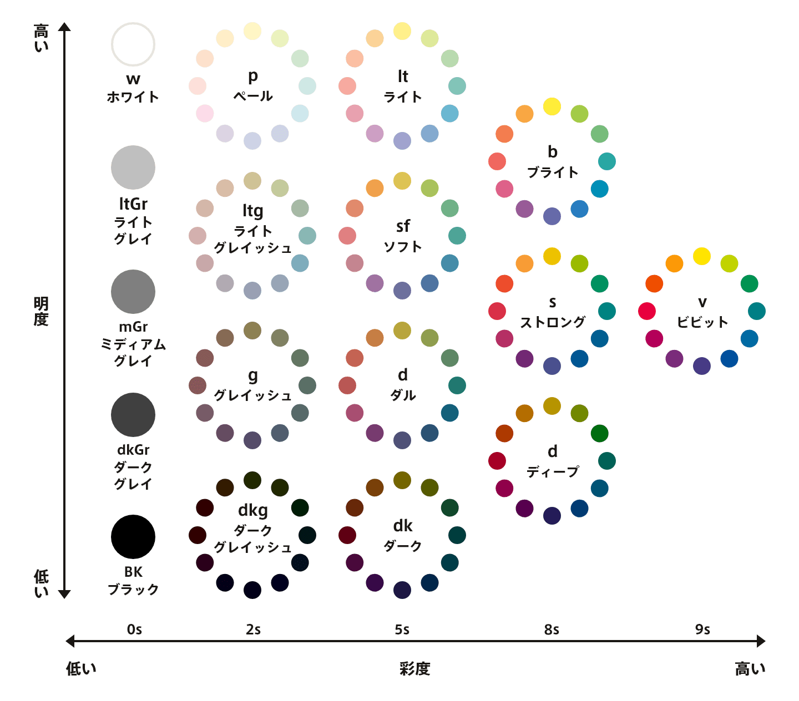
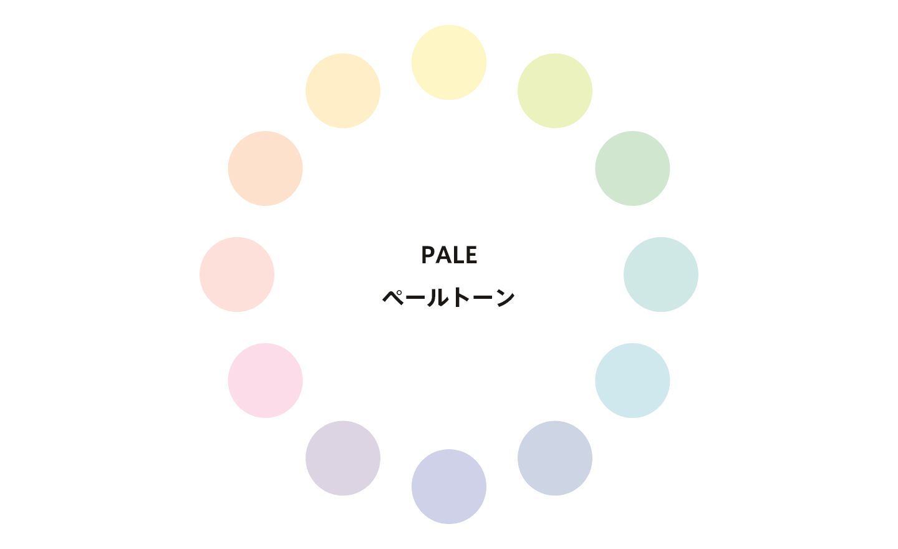
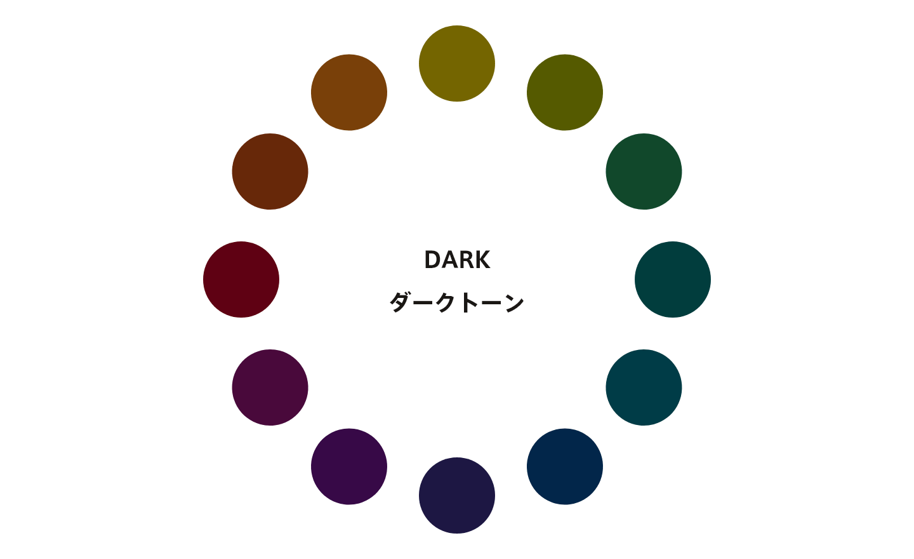
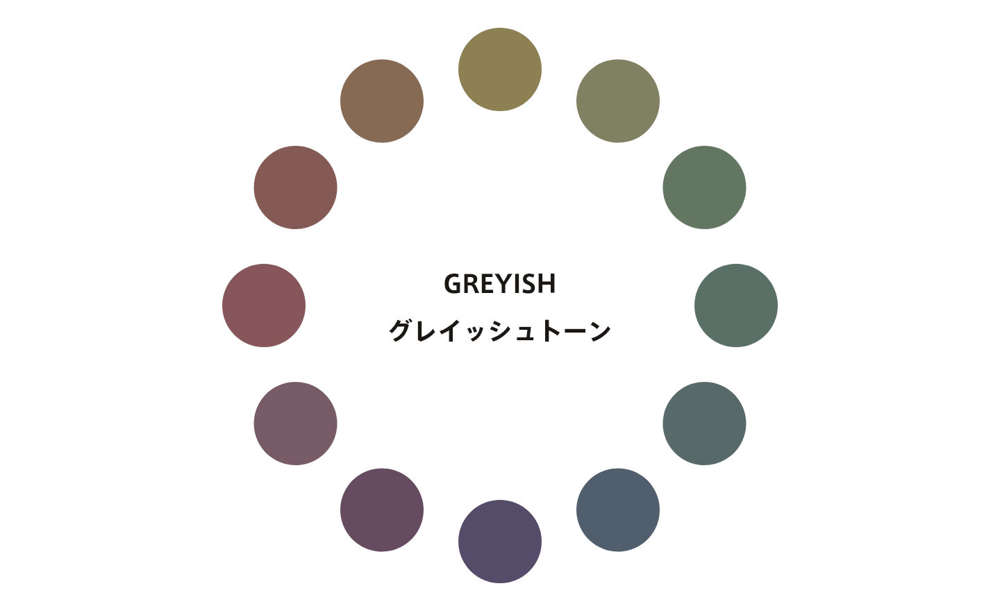

色について
背景と色の組み合わせを学ぶにあたり、色に関する前提知識についてここで学習します。色に関する基本ですが、 知らないことがある場合、前提として理解しておくようにしましょう。
色は、デザインの大きな部分を占めます。「あなたが作るコンテンツをどう見せるか」を考える際に、心強いツールと なりえます。プロでも難しい部分ですが、十分に使いこなして下さい。
色の種類
色は、大きく分けると「無彩色」と「有彩色」に分かれます。無彩色はグレーやブラックなどの色味がない色で、 有彩色は赤、青などの色味を持つ色の総称です。
色の3属性
色は3つの属性を持っています。以下で紹介します。
一つ目は色相です。「色味の違い」のことであり、代表的な色を集めたものを色相環といいます。（右写真）
色相環において隣り合う色のことを「類似色」といい、反対側にある色のことを「補色」といいます。補色は、色相の差が 大きいので、見た人にインパクトを与える配色になります。 また、補色の両サイドの色のことを「反対色」といいます。反対色は補色と同じように色相の差があるものの、 補色よりも調和しやすく、洗練された配色に向いています。
二つ目は彩度です。「色の鮮やかさ」のことであり、もっとも彩度が高い色を純色といいます。 一方、もっとも彩度が低いのは無彩色です。
三つめは明度です。「色の明るさの度合い」のことです。明度が高くなると白に近づき、明度が低くなると 黒に近づきます。
トーン
3つの属性のうち、明度と彩度の組み合わせで表されるのがトーンであり、「色の調子」とも呼ばれます。 以下のトーン図に代表的なトーン名を示しています。
トーンのうち、いくつかについてどんな印象を与えるかについて以下で紹介しています。
-

軽い、あっさり、弱弱しい、優しい、淡い
-

知的、大人、かっこいい、スタイリッシュ
-

濁った、地味な、落ち着いた、都会的
色の印象
色それぞれが持っている印象というものがあります。一般的に人間が色からどういった印象を受けるかということは 既にある程度調べられており、それを用いて印象を変えることが多く行われています。例えば信号機などに黄色と黒が 使われているのは注意を引くためです。
しかし、色の印象を過信しすぎてもいけません。人による幅が大きいからです。また、色の知識があるかないかによっても 大きく変わります。したがって、あくまでもサブ的に仕掛けるのがよいと思われます。